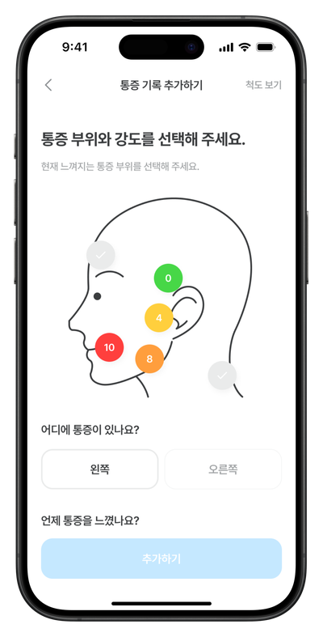
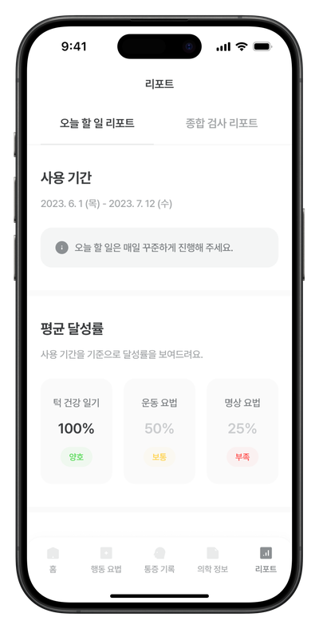

클릭리스란?
의사가 처방하는
의사가 처방하는
‘먹지 않는 치료제’
클릭리스는 식약처 허가를 받은 디지털 치료기기(DTx)입니다. 약 대신 스마트폰 앱으로, 턱관절장애의 핵심 원인인 이 악물기 · 스트레스 반응 · 나쁜 구강 습관을 인지행동치료(CBT)로 바로잡습니다.
STEP 1
🦷
치과에서 진료 · 처방
클릭리스를 도입한 치과에서 진료를 받고, 의사가 필요하다고 판단하면 처방을 받습니다.
STEP 2
📱
집에서 하루 5분, 6주
AI 얼굴 인식으로 자세를 확인하며 턱 근육 이완 운동, 습관 교정, 스트레스 관리를 따라 합니다.
STEP 3
👩⚕️
의사가 데이터로 확인
내 통증 변화와 치료 수행 기록이 의료진 대시보드로 전달돼, 다음 진료가 더 정확해집니다.
🤖AI 얼굴 인식카메라로 턱 움직임을 확인하며 운동을 정확하게
🧠인지행동치료(CBT)무의식적인 이 악물기를 스스로 알아차리도록
📊증상 · 습관 기록통증과 구강 습관 변화를 매일 객관적 데이터로
🎯맞춤 프로그램내 상태에 맞춘 이완 · 명상 · 재활 운동




기존 치료만 받을 때
클릭리스와 함께
병원 밖 관리
“운동 열심히 하세요” 말로만
매일 앱이 가이드
원인 습관 교정
환자 혼자 기억해야 함
CBT로 체계적 교정
경과 확인
진료실 문진에 의존
기록된 데이터로 확인
기존 치료와 병행
—
물리치료 · 장치 치료와 병용